Mathias Lechner, PhD
I am Co-founder and CTO of Liquid AI and
also a Research
Affilate at the Computer Science
and Artificial
Intelligence
Laboratory (CSAIL) at MIT working with Prof.
Daniela Rus.
I completed my PhD (2022) at the Institute of
Science and Technology
Austria (ISTA)
supervised by
Tom Henzinger.
Prior to my PhD, I
received my master
(2017) and bachelor (2016) degrees in Computer Science at
the Vienna University of Technology (TU
Wien).
Liquid AI is a research-driven company that builds a new generation of foundation models from
first
principles.
In my research role at MIT, I focus on developing robust and trustworthy machine
learning models. My
works have
been published in the journal Nature Machine Intelligence and at various ML/AI conferences,
including
NeurIPS, ICML,
ICLR, ICRA, and AAAI.
Publications
-
Gigastep - One Billion Steps per Second Multi-agent Reinforcement Learning
Mathias Lechner, Lianhao Yin, Tim Seyde, Tsun-Hsuan Wang, Wei Xiao, Ramin Hasani, Joshua Rountree, Daniela Rus
Conference on Neural Information Processing Systems (NeurIPS) - Dataset and Benchmark Track, 2023
-
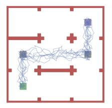Compositional Policy Learning in Stochastic Control Systems with Formal Guarantees
Đorđe Žikelić*, Mathias Lechner*, Abhinav Verma, Krishnendu Chatterjee, Thomas A Henzinger
Conference on Neural Information Processing Systems (NeurIPS), 2023
-
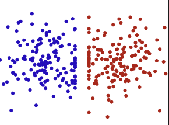On the Size and Approximation Error of Distilled Datasets
Alaa Maalouf, Murad Tukan, Noel Loo, Ramin Hasani, Mathias Lechner Daniela Rus
Conference on Neural Information Processing Systems (NeurIPS), 2023
-
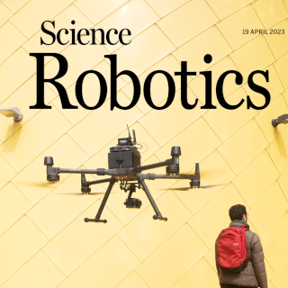Robust flight navigation out of distribution with liquid neural networks
Makram Chahine*, Ramin Hasani*, Patrick Kao*, Aaron Ray, Ryan Shubert, Mathias Lechner, Alexander Amini, Daniela Rus
Science Robotics, 2023
-
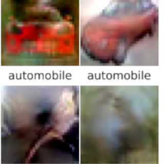Dataset Distillation with Convexified Implicit Gradients
Noel Loo, Ramin Hasani, Mathias Lechner, Daniela Rus
International Conference on Machine Learning (ICML), 2023
-
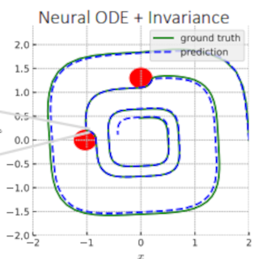On the Forward Invariance of Neural ODEs
Wei Xiao, Tsun-Hsuan Wang, Ramin Hasani, Mathias Lechner, Yutong Ban, Chuang Gan, Daniela Rus
International Conference on Machine Learning (ICML), 2023
-
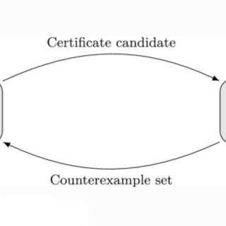A Learner-Verifier Framework for Neural Network Controllers and Certificates of Stochastic Systems
Krishnendu Chatterjee, Thomas A Henzinger, Mathias Lechner, Đorđe Žikelić
International Conference on Tools and Algorithms for the Construction and Analysis of Systems (TACAS), 2023
-
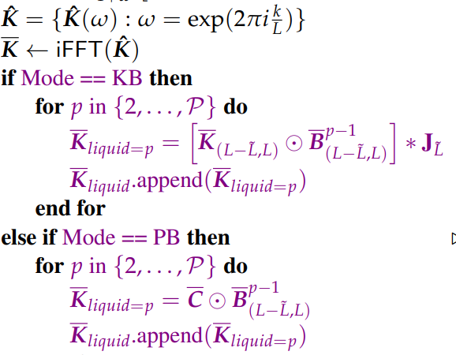Liquid Structural State-Space Models
Ramin Hasani*, Mathias Lechner*, Tsun-Hsuan Wang, Makram Chahine, Alexander Amini, Daniela Rus
International Conference on Learning Representations (ICLR) , 2023
-
 Infrastructure-based End-to-End Learning and Prevention of Driver Failure
Infrastructure-based End-to-End Learning and Prevention of Driver FailureNoam Buckman, Shiva Sreeram, Mathias Lechner, Yutong Ban, Ramin Hasani, Sertac Karaman, Daniela Rus
IEEE International Conference on Robotics and Automation (ICRA), 2023
-
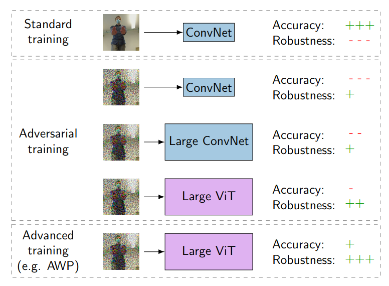Revisiting the Adversarial Robustness-Accuracy Tradeoff in Robot Learning
Mathias Lechner, Alexander Amini, Daniela Rus, Thomas A. Henzinger
IEEE Robotics and Automation Letters (RA-L) , 2023
-
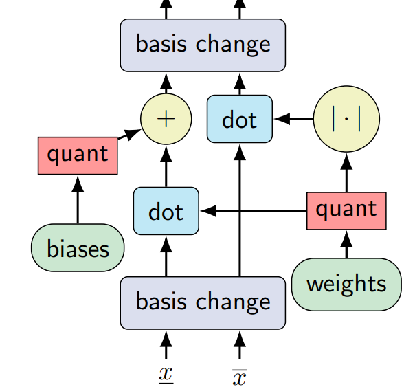Quantization-aware Interval Bound Propagation for Training Certifiably Robust Quantized Neural Networks
Mathias Lechner, Đorđe Žikelić, Krishnendu Chatterjee, Thomas A. Henzinger, Daniela Rus
AAAI Conference on Artificial Intelligence (AAAI) , 2023
-
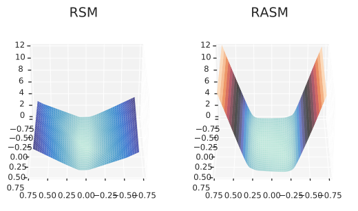Learning Control Policies for Stochastic Systems with Reach-avoid Guarantees
Đorđe Žikelić*, Mathias Lechner*, Thomas A. Henzinger, Krishnendu Chatterjee
AAAI Conference on Artificial Intelligence (AAAI) , 2023
-
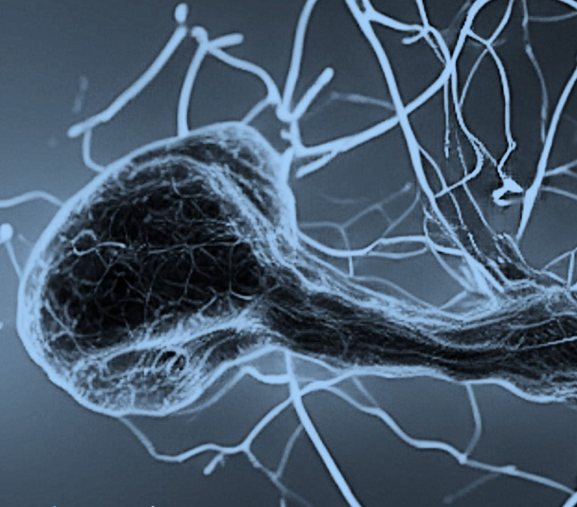Closed-form continuous-time neural networks
Ramin Hasani*, Mathias Lechner*, Alexander Amini, Lucas Liebenwein, Aaron Ray, Max Tschaikowski, Gerald Teschl, Daniela Rus
Nature Machine Intelligence, 2022
-
 PyHopper-A Plug-and-Play Hyperparameter Optimization Engine
PyHopper-A Plug-and-Play Hyperparameter Optimization EngineMathias Lechner, Ramin Hasani, Sophie Neubauer, Philipp Neubauer, Daniela Rus
Has it Trained Yet? NeurIPS 2022 Workshop, 2022
-
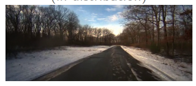Are All Vision Models Created Equal? A Study of the Open-Loop to Closed-Loop Causality Gap
Mathias Lechner, Ramin Hasani, Alexander Amini, Tsun-Hsuan Wang, Thomas A Henzinger, Daniela Rus
NeurIPS 2022 Machine Learning for Autonomous Driving Workshop (ML4AD), 2022
-
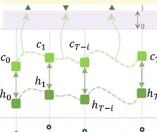Mixed-Memory RNNs for Learning Long-term Dependencies in Irregularly-sampled Time Series
Mathias Lechner, Ramin Hasani
Memory in Artificial and Real Intelligence (MemARI) NeurIPS 2022 Workshop, 2022
-
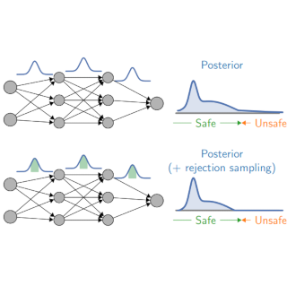Infinite Time Horizon Safety of Bayesian Neural Networks
Mathias Lechner*, Đorđe Žikelić*, Krishnendu Chatterjee, Thomas A. Henzinger
Conference on Neural Information Processing Systems (NeurIPS), 2021
-
 Causal Navigation by Continuous-time Neural Networks
Causal Navigation by Continuous-time Neural NetworksCharles J Vorbach*, Ramin Hasani*, Alexander Amini, Mathias Lechner, Daniela Rus
Conference on Neural Information Processing Systems (NeurIPS), 2021
-
 On-Off Center-Surround Receptive Fields for Accurate and Robust Image
On-Off Center-Surround Receptive Fields for Accurate and Robust ImageZahra Babaiee, Ramin Hasani, Mathias Lechner, Daniela Rus, Radu Grosu
International Conference on Machine Learning (ICML), 2021
-
 Adversarial Training is Not Ready for Robot Learning
Adversarial Training is Not Ready for Robot LearningMathias Lechner, Ramin Hasani, Radu Grosu, Daniela Rus, Thomas A. Henzinger
IEEE International Conference on Robotics and Automation (ICRA), 2021
-
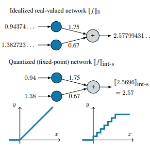Scalable Verification of Quantized Neural Networks
Thomas A. Henzinger*, Mathias Lechner*, and Djordje Zikelic* (alphabetical)
AAAI Conference on Artificial Intelligence (AAAI) , 2021
-
 Liquid Time-constant Networks
Liquid Time-constant NetworksRamin Hasani*, Mathias Lechner*, Alexander Amini, Daniela Rus, and Radu Grosu
AAAI Conference on Artificial Intelligence (AAAI) , 2021
-
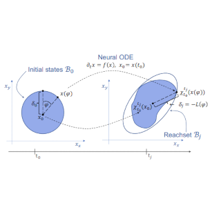On the Verification of Neural ODEs with Stochastic Guarantees
Sophie Grünbacher, Ramin Hasani, Mathias Lechner, Jacek Cyranka, Scott A. Smolka, and Radu Grosu
AAAI Conference on Artificial Intelligence (AAAI) , 2021
-
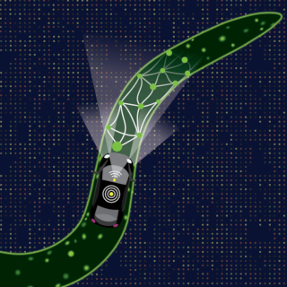Neural circuit policies enabling auditable autonomy
Mathias Lechner*, Ramin Hasani*, Alexander Amini, Thomas A. Henzinger, Daniela Rus, and Radu Grosu
Nature Machine Intelligence, 2020
-
 The Natural Lottery Ticket Winner: Reinforcement Learning with Ordinary Neural Circuits
The Natural Lottery Ticket Winner: Reinforcement Learning with Ordinary Neural CircuitsRamin Hasani*, Mathias Lechner*, Alexander Amini, Daniela Rus, and Radu Grosu
International Conference on Machine Learning (ICML), 2020
-
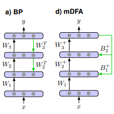Learning Representations for binary classification without backpropagation
Mathias Lechner
International Conference on Learning Representations (ICLR), 2020
-
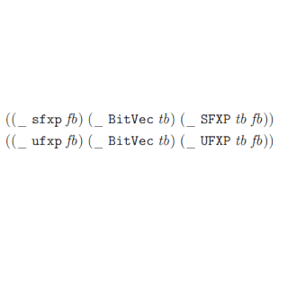An SMT Theory of Fixed-Point Arithmetic
Marek Baranowski, Shaobo He, Mathias Lechner, Thanh Son Nguyen, and Zvonimir Rakamaric
International Joint Conference on Automated Reasoning (IJCAR), 2020
-
 Gershgorin Loss Stabilizes the Recurrent Neural Network Compartment of an End-To-End Robot Learning Scheme
Gershgorin Loss Stabilizes the Recurrent Neural Network Compartment of an End-To-End Robot Learning SchemeMathias Lechner*, Ramin Hasani*, Daniela Rus, and Radu Grosu
IEEE International Conference on Robotics and Automation (ICRA), 2020
-
 How Many Bits Does it Take to Quantize Your Neural Network? Scheme
How Many Bits Does it Take to Quantize Your Neural Network? SchemeMirco Giacobbe*, Thomas A. Henzinger*, and Mathias Lechner* (alphabetical)
International Conference on Tools and Algorithms for the Construction and Analysis of Systems (TACAS), 2020
-
 Lagrangian Reachtubes: The Next Generation
Lagrangian Reachtubes: The Next GenerationSophie Gruenbacher, Jacek Cyranka, Mathias Lechner, Md. Ariful Islam, Scott Smolka, and Radu Grosu
IEEE Conference on Decision and Control (CDC), 2020
-
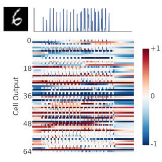Response characterization for auditing cell dynamics in long short-term memory networks
Ramin Hasani*, Alexander Amini*, Mathias Lechner, Felix Naser, Radu Grosu, and Daniela Rus
International Joint Conference on Neural Networks (IJCNN), 2019
-
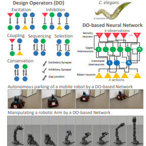Designing worm-inspired neural networks for interpretable robotic control
Mathias Lechner*, Ramin Hasani*, Manuel Zimmer, Thomas A. Henzinger, and Radu Grosu
IEEE International Conference on Robotics and Automation (ICRA), 2019